기본 공격의 서버 판정과 복제 범위
클라이언트가 기본 공격을 요청하면 데디케이트 서버가 비용과 적중을 확정합니다. 고정 표적 시험에서 표적 HP 100→90은 양쪽 클라이언트에, 공격자의 스태미나 100→90은 소유 클라이언트에 반영됐습니다.
둘이 숲의 전투와 퍼즐을 통과하고 흑기사를 격파한 뒤, 얻은 장비를 지닌 채 로비로 돌아오는 협동 액션 RPG입니다.
처음 사용하는 GAS와 데디케이트 서버 환경에서, 처음부터 AI와 역할을 나눠 기획·구현·검증을 거쳐 플레이 가능한 원정을 완성하고자 시작했습니다.
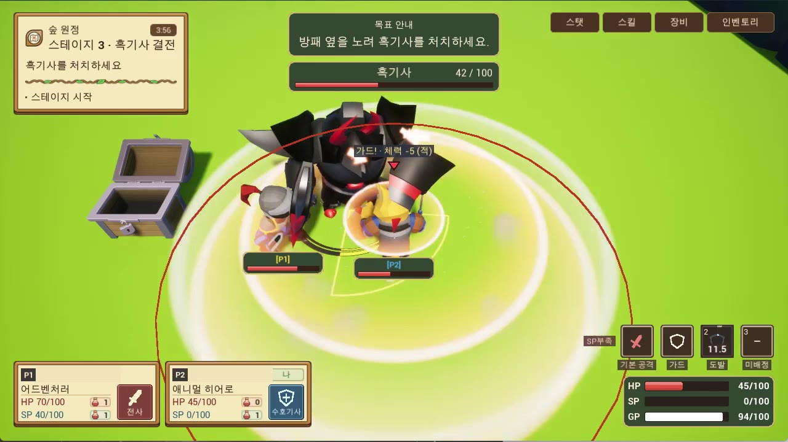
원정을 세 스테이지로 구성하고 MVP 범위, 실패 시 재도전, 장비 이월 규칙을 정했습니다. 숲 레벨에 캐릭터와 에셋을 배치하고 애니메이션을 설정했습니다.
AI 협업 규칙과 테스트 기준을 작성하고 산출물을 검토했습니다. 마지막에는 데스크톱과 노트북에서 직접 플레이하며 보상과 귀환을 확인했습니다.
요구사항을 바탕으로 설계 대안을 제시하고 GAS 전투, 서버 판정, 상태 복제와 HUD를 구현했습니다.
반복 시험을 구성하고 서버와 두 클라이언트의 로그를 대조했습니다. 제가 수동 플레이에서 발견한 문제를 수정하고 같은 조건에서 결과를 다시 확인했습니다.
개별 영상은 각각 4분 02초입니다. 세 편 모두 무음 자막 편집본입니다.
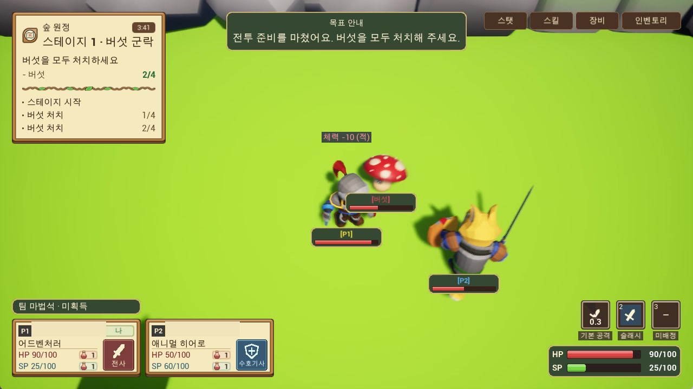
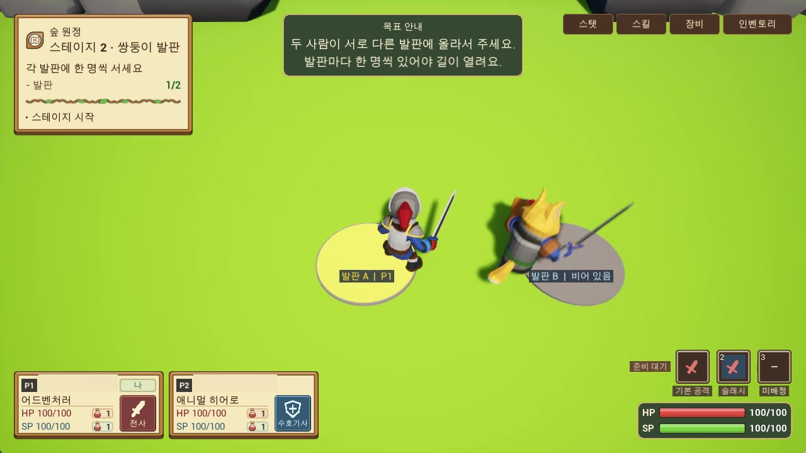
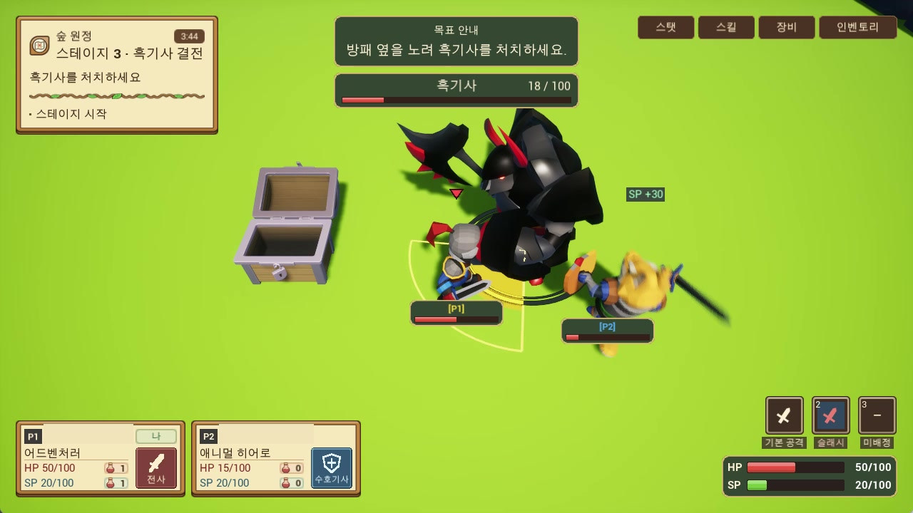
11.16 로컬 서버와 두 창에서 전리품, 공동 탈출, 성공·1점, 다음 맵 재준비를 확인했습니다.
11.24 두 PC에서 재도전과 준비 중 재접속을 거쳐 원정을 마쳤습니다. 보스 보상, 공동 귀환, 양쪽 1점·각 30골드, 개인 검 유지, 귀환 뒤 상점과 공유 창고를 확인했습니다.
검증 패키지 expedition-2pc-20261124 · 소스 5654393 및 로컬 변경
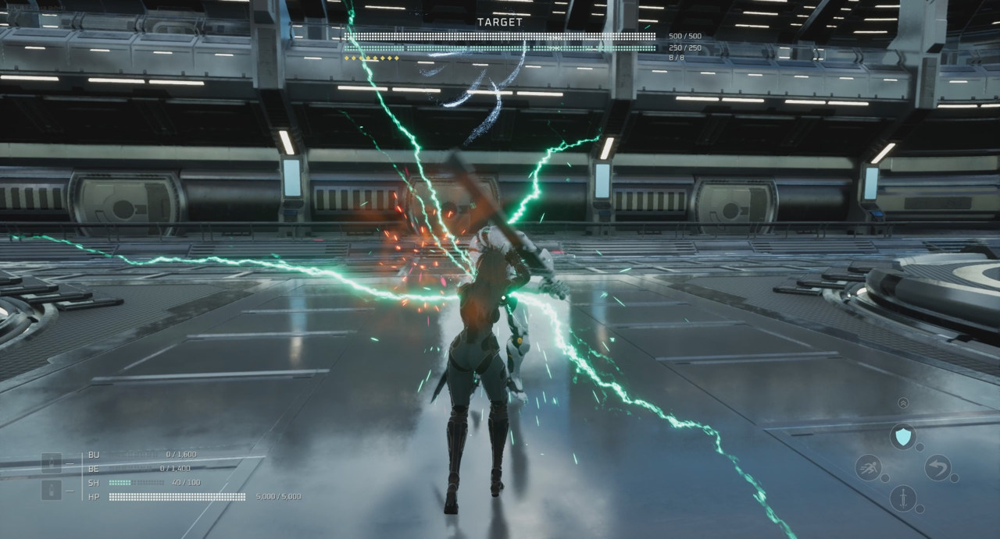
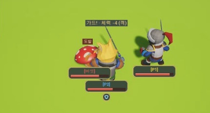
공격자가 자체 피해 이벤트에 요청 피해량과 적중 정보를 담습니다. 피격자 쪽 코드가 가드를 판정하고, 자체 체력 컴포넌트에서 확정 피해를 반영합니다.
서버가 방패 방향과 수호로 피해량을 정합니다. 효과 사양에 그 피해를 담아 대상 ASC에 적용하면 GAS가 체력 속성(Health)을 갱신합니다.
같은 정면 공격을 막는 통제 시험에서 수호 스크롤 사용 전 피해 5, 사용 후 피해 4를 확인했습니다. 11.24 두 PC 원정에서도 스크롤을 쓴 2P가 버섯 공격을 막아 피해 4를 받았습니다.
7쪽 · 두 프로젝트의 실제 가드 장면 →8쪽 · 피해 처리 구조와 GAS →
클라이언트가 기본 공격을 요청하면 데디케이트 서버가 비용과 적중을 확정합니다. 고정 표적 시험에서 표적 HP 100→90은 양쪽 클라이언트에, 공격자의 스태미나 100→90은 소유 클라이언트에 반영됐습니다.
두 클라이언트는 같은 상자의 마지막 물약을 15ms 간격으로 요청했습니다. 둘 다 품절 표시를 받기 전이었습니다. 서버는 A에게 한 번 지급해 재고를 1에서 0으로 바꾼 뒤 B를 품절로 거절했습니다. 두 화면에서 공용 재고는 0개, 개인 가방은 A 1개·B 0개였습니다. 11월 23일 같은 PC의 데디케이트 서버·두 클라이언트 자동 입력 회차 Race-002809에서 확인했습니다.
“직업별 보급 장비를 첫 스테이지에서 한 번 지급하고 원정 종료 시 회수되게 해줘.”
제가 재도전 중 중복 지급 검사와 서버·A·B의 원본 기록을 요청했습니다. Codex가 대여 장비와 개인 장비를 구분해 구현하고 반복 시험을 구성했습니다. 11월 23일 같은 PC에서 제가 두 클라이언트를 조작했고, Codex가 같은 수동 회차의 기록을 대조했습니다. 시간 초과와 사망 재도전에서 추가 지급 0건, 보스 처치 후 보급 장비는 각자 한 번 회수됐습니다. 개인 귀속 검은 로비에 남았습니다.
11월 16일 수동 회차에서 A의 공격 비용이 11:24:58.068에 확정됐고, 서버는 11:24:58.468에 취소를 처리했습니다. 승인된 10건은 모두 Damage=0 Committed=1이었습니다. 활성 공격이 없어 무시된 나머지 3건은 NoActiveAttack으로 기록됐습니다.
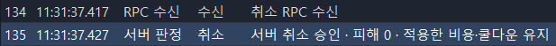
지원자가 직접 플레이해 실패·0점 뒤 다음 맵으로 이동하는 동작을 확인했습니다. 같은 구간 재도전을 결정하고, Codex가 서버 이동·라운드 초기화를 수정했습니다. 수동 회차에서 시간 초과와 사망 후 같은 맵 재시작을 확인했습니다.
AI와 함께 접속 상태와 전투 판정을 확인하려고 두 도구를 기획했습니다. 실행기에는 원격 참가자를 표시하고, 뷰어에서는 취소 호출·서버 수신·비용·피해를 구분하도록 제가 기준을 정했습니다. Codex가 두 도구를 구현했습니다.
제가 두 클라이언트를 조작하고 Codex가 같은 회차의 서버·A·B 로그를 대조했습니다. 취소 요청 13건 중 10건은 피해 전에 취소됐고, 3건은 취소할 활성 공격이 없었습니다. 실행기 화면과 로그 뷰어 화면은 서로 다른 회차입니다.
서버가 좌석을 30초간 예약했습니다. 예약이 만료된 뒤 입장하면 개인 물약과 대여 장비가 사라졌습니다. Codex가 원래 자리가 비어 있을 때 복원하자고 제안했습니다. 저는 다른 사람이 그 자리를 쓰는 경우를 제시했고, 같은 원정의 접속 ID로 참가자의 상태를 복원하기로 했습니다.
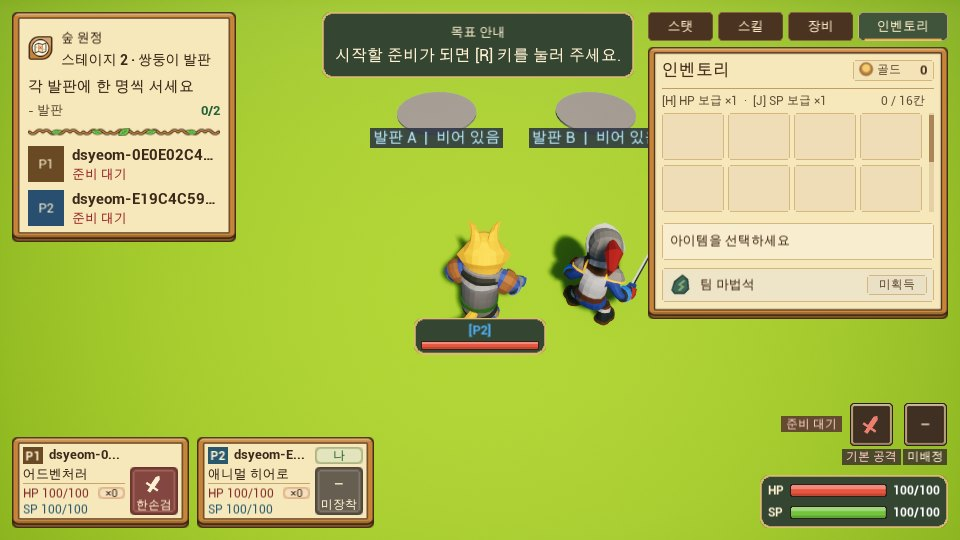
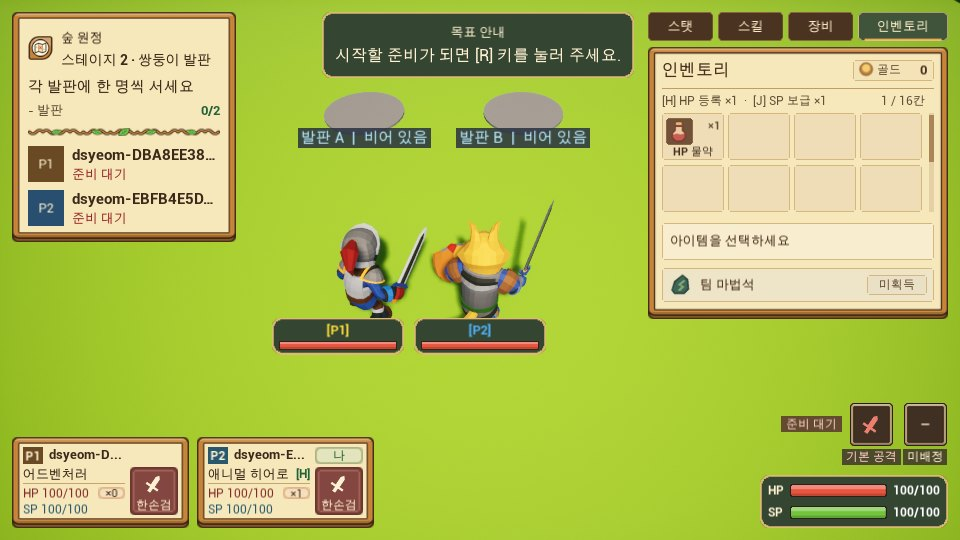
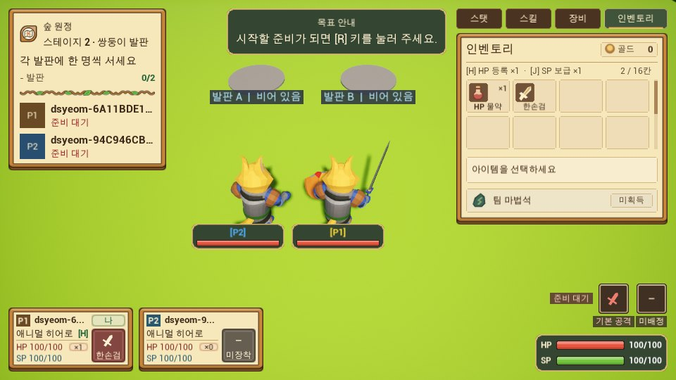
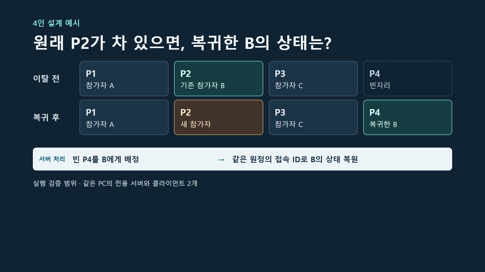
실행은 같은 PC에서 최대 두 명을 순차 교체했습니다. P2 도착 비교는 예약 후 36.338초와 36.383초였습니다. 독립 Win64 패키지의 별도 회차에서는 같은 클라이언트가 44.148초에 재접속해 상태를 복원했습니다.
수량 상한에서의 동작을 제가 확인해 달라고 요청했습니다. 수정 전 상자와 적 드롭은 지급을 승인했고, 가방 수량은 2,147,483,647에서 −2,147,483,648로 바뀌었습니다. Codex가 서버의 상한 검사를 지급처 상태 변경 앞으로 옮겼습니다.
| 지급처 | 상한 직전 | 상한 도달 |
|---|---|---|
| 공용 상자 | 지급 1, 재고 0 | 거절, 재고 1 유지 |
| 적 드롭 | 지급 1, 획득 처리 | 거절, 미획득 유지 |
상자 회차의 서버 로그 2121행과 적 드롭 회차의 4324행에서 거절 사유 BagLimit을 확인했습니다. 두 회차 모두 지급은 0건이고, 가방 수량은 상한에 머물렀습니다. 이 시험은 경계값을 직접 설정했습니다.
제가 지목한 12번 반격에서 P2 체력은 도끼가 지나간 순간 50이었고 뒤이어 40이 됐습니다. Codex가 반격 번호로 화면과 로그를 맞춘 결과, 데스크톱 A에서 타격 자세부터 서버 피해 확정까지 797ms, 그 뒤 HP 갱신까지 29ms였습니다.
제가 노트북을 조작하고 Codex가 두 회차를 대조했습니다. 같은 패키지·맵·PC 역할에서 반디캠을 끄고 서버의 -forcelogflush만 켜거나 껐습니다.
| 시점 | 강제 로그 쓰기 켬 | 끔 |
|---|---|---|
| 데스크톱 A | 322ms | 28ms |
| 노트북 B | 259ms | 25ms |
피해 확정 평타에는 공격자의 자세를 60ms 멈추는 연출이 있었습니다. 별도의 측면 적중에서는 보스 HP가 줄고 약 0.6초 뒤 섬광이 보였습니다. 그 적중의 처리·복제·표시 지연은 개별 측정되지 않았습니다.
노트북 최대 프레임 시간은 녹화 켬 약 69초에서 166.2ms, 끔 90초에서 17.2ms였습니다. 네트워크와 A의 렌더링 조건도 달랐습니다. 최초 14번 반격의 모션 반복은 후속 켬·끔 양쪽에서 재현되지 않아 해결 여부가 남았습니다.
최초 양쪽 화면 확대참가자가 떠난 뒤 서버가 자리를 비우는 시점과, 공격자에게 쿨다운 상태가 전달되는 경로를 각각 확인했습니다.
다른 PC에서 B를 닫았을 때 호스트에 참가 슬롯이 남았습니다. 정상 종료를 서버에 전달하고 유예 후 종료하도록 바꿨습니다. 서버가 종료 신호를 받은 뒤 슬롯 갱신까지 한 회차에서 84ms를 관측했습니다. 강제 종료의 60초는 당시 두 PC에서 본 별도 타임아웃입니다.
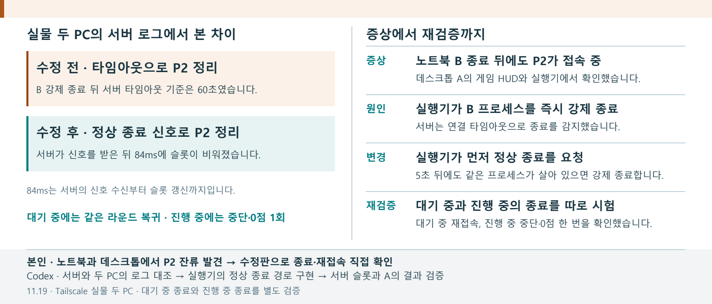
서버는 쿨다운 2초 중 재요청을 거절했지만 일반 입력이 서버까지 전송됐습니다. Codex가 플레이어 ASC 상태의 소유자 전달을 조사하고 Minimal에서 Mixed로 바꿨습니다. 일반 입력 차단, 서버 거절, 두 플레이어의 독립 쿨다운을 다시 확인했습니다.
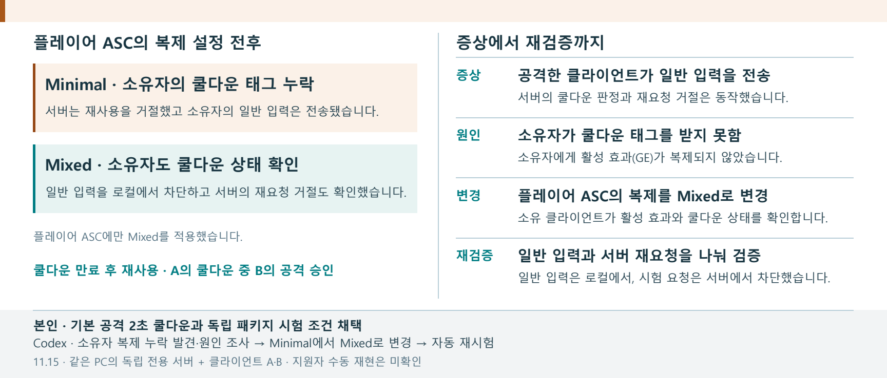
11월 24일 같은 Win64 Development 패키지로 데스크톱에서 데디케이트 서버와 클라이언트 A, 노트북에서 클라이언트 B를 실행했습니다.
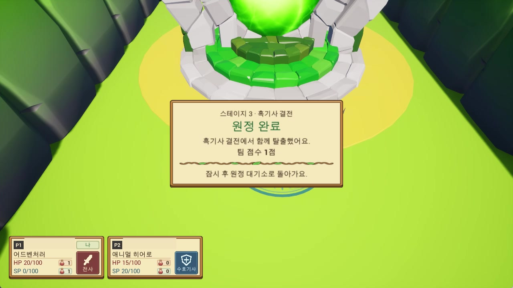
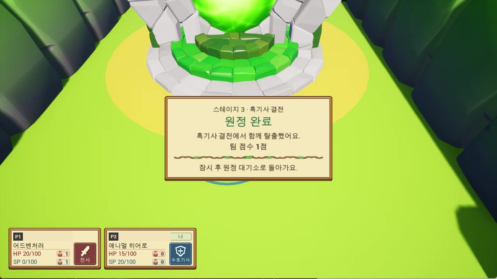
검증 패키지 expedition-2pc-20261124 · 소스 5654393 및 로컬 변경 포함